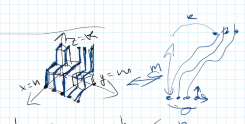

Ptz camp 的部分题。
题目是乱序的。
E3 Mountains
求 \(n \times m\) 的非负矩阵个数，满足 \((1, 1)\) 到 \((n, m)\) 的最大路径和不超过 \(k\)。答案对 \(10^9 + 7\) 取模。
\(1 \leq n, m, k \leq 100\)
最大路径和，有个经典DP。
\[ dp_{i, j} = a_{i, j} + \max \{ dp_{i - 1, j}, dp_{i, j - 1} \} \]
由 \(a_{i, j} \geq 0\)，得到 \(dp_{i, j} \geq dp_{i - 1, j}, dp_{i, j} \geq dp_{i, j - 1}\)。
然后还有 \(dp_{n, m} \leq k\)。
由上面的等式可知a和dp数组可以相互转化，所以问题转化为求dp矩阵的个数。
画出三维的方块图，\(dp_{i, j}\) 表示 (i, j) 上有 \(dp_{i, j}\) 个方块，然后可以转化为不相交路径计数，用LGV引理解决。

void solve() {
int n, m, k;
std::cin >> n >> m >> k;
std::vector<std::vector<Z>> bin(k + m + 1, std::vector<Z>(k + m + 1));
for (int i = 0; i <= k + m; i++) {
bin[i][0] = 1;
for (int j = 1; j <= i; j++) {
bin[i][j] = bin[i - 1][j] + bin[i - 1][j - 1];
}
}
std::vector<std::vector<Z>> a(n, std::vector<Z>(n));
for (int i = 0; i < n; i++) {
for (int j = 0; j < n; j++) {
a[i][j] = m + j - i < 0 || j - i > k ? 0 : bin[k + m][m + j - i];
}
}
Z ans = 1;
for (int i = 0; i < n; i++) {
for (int j = i; j < n; j++) {
if (a[j][i]) {
std::swap(a[i], a[j]);
break;
}
}
if (!a[i][i]) {
ans = 0;
break;
}
ans *= a[i][i];
for (int j = i + 1; j < n; j++) {
if (a[j][i]) {
Z c = a[j][i] / a[i][i];
for (int k = 0; k < n; k++) {
a[j][k] -= c * a[i][k];
}
}
}
}
std::cout << ans << "\n";
}I3 Box Packing
给定 \(n\) 个二元组 \((a_i, b_i)\)，按字典序有序。
求最长的子序列长度，满足该子序列可以划分成不超过k个a,b均单调不降的子序列。
\(1 \leq n \leq 10^5, 1 \leq k \leq 100\)
杨表。科技题，证明还non-trival，难搞哦。
19年集训队论文《浅谈杨氏矩阵在信息学竞赛中的应用》
void solve() {
int n, k;
std::cin >> n >> k;
std::vector<PII> a(n);
for (int i = 0; i < n; i++) std::cin >> a[i].first >> a[i].second;
std::sort(a.begin(), a.end());
std::vector<std::vector<int>> p;
for (auto [_, x] : a) {
for (int i = 0; i <= p.size() && i < k; i++) {
if (i == p.size()) {
p.push_back({x});
break;
}
auto it = std::upper_bound(p[i].begin(), p[i].end(), x);
if (it == p[i].end()) {
p[i].push_back(x);
break;
}
std::swap(x, *it);
}
}
p.resize(k);
int ans = 0;
for (int i = 0; i < k; i++) {
ans += p[i].size();
}
std::cout << ans << "\n";
}K3 Fancy Arrays
求长度为 \(n\) 的序列 \(a\) 的数量，满足 \(a_i | m, \operatorname{gcd}(a_i, a_{i+1})>1\)。\(q\) 次询问 \(n\)。
\(m \leq 10^{16}, q \leq 150, n \leq 10^{18}\)。
\(m\) 质因数分解后，指数相同的质因子是等价的，划分成一个类，状态表示为等价类内选择了多少个质因子。
状态数 \(N\) 不超过256个，预处理出转移矩阵的幂 \(M, M^2, M^4, M^8, \dots\)。
这样每次矩阵乘一个向量是 \(O(N^2)\) 的。
总复杂度 \(O(N^3\log n + qN^2\log n)\)
这题还可以直接 BM，下面是牛逼群友的解释：
You need to count some number of paths in graph, number of paths is equal to sum of A^n * v, where A is transition matrix and v is initial vector. Any element of A^n*v follows linear recurrence defined by minimal polynomial of A, so answer for the problem also follows linear recurrence.
// Author: HolyK
// Created: Sun Feb 13 22:37:24 2022
#include <bits/stdc++.h>
template <class T, class U>
inline bool smin(T &x, const U &y) {
return y < x ? x = y, 1 : 0;
}
template <class T, class U>
inline bool smax(T &x, const U &y) {
return x < y ? x = y, 1 : 0;
}
using LL = long long;
using PII = std::pair<int, int>;
constexpr int P(1e9 + 7);
inline void inc(int &x, int y) {
x += y;
if (x >= P) x -= P;
}
inline void dec(int &x, int y) {
x -= y;
if (x < 0) x += P;
}
inline int mod(LL x) { return x % P; }
int fpow(int x, int k = P - 2) {
int r = 1;
for (; k; k >>= 1, x = 1LL * x * x % P) {
if (k & 1) r = 1LL * r * x % P;
}
return r;
}
struct Z {
int x;
Z() : x(0) {}
Z(int v) : x(v < 0 ? v + P : v >= P ? v - P : v) {}
Z(LL v) : x((v %= P) < 0 ? v + P : v) {}
explicit operator bool() { return !!x; }
Z inv() const { return Z(fpow(x)); }
Z pow(int k) const { return Z(fpow(x, k)); }
Z operator-() const { return Z(P - x); }
Z &operator+=(const Z &r) { return inc(x, r.x), *this; }
Z &operator-=(const Z &r) { return dec(x, r.x), *this; }
Z &operator*=(const Z &r) { return x = LL(x) * r.x % P, *this; }
Z &operator/=(const Z &r) { return x = LL(x) * fpow(r.x) % P, *this; }
inline friend Z operator+(const Z &a, const Z &b) { return Z(a) += b; }
inline friend Z operator-(const Z &a, const Z &b) { return Z(a) -= b; }
inline friend Z operator*(const Z &a, const Z &b) { return Z(a) *= b; }
inline friend Z operator/(const Z &a, const Z &b) { return Z(a) /= b; }
inline friend std::ostream &operator<<(std::ostream &os, const Z &r) {
return os << r.x;
}
};
constexpr int N(233 + 5);
int fac[N], ifac[N];
int bin(int n, int m) {
if (m < 0 || m > n) return 0;
return 1LL * fac[n] * ifac[m] % P * ifac[n - m] % P;
}
void init(int n) {
fac[0] = ifac[0] = 1;
for (int i = 1; i <= n; i++) fac[i] = 1LL * fac[i - 1] * i % P;
ifac[n] = fpow(fac[n]);
for (int i = n - 1; i > 0; i--) ifac[i] = 1LL * ifac[i + 1] * (i + 1) % P;
}
using Poly = std::vector<int>;
using Matrix = std::vector<Poly>;
Matrix operator*(const Matrix &a, const Matrix &b) {
int n = a.size();
Matrix c(n, Poly(n));
for (int i = 0; i < n; i++) {
for (int k = 0; k < n; k++) {
for (int j = 0; j < n; j++) {
c[i][j] = (c[i][j] + 1LL * a[i][k] * b[k][j]) % P;
}
}
}
return c;
}
Poly operator*(const Poly &a, const Matrix &b) {
int n = a.size();
Poly r(n);
for (int i = 0; i < n; i++) {
for (int j = 0; j < n; j++) {
r[j] = (r[j] + 1LL * a[i] * b[i][j]) % P;
}
}
return r;
}
using LLL = __int128_t;
LL fpow(LL x, LL k, LL p) {
LL r = 1;
for (; k; k >>= 1, x = (LLL)x * x % p) {
if (k & 1) r = (LLL)r * x % p;
}
return r;
}
bool isPrime(LL p) {
if (p < 2) return false;
if (p == 2 || p == 3) return true;
LL d = p - 1, r = 0;
static std::mt19937 rnd(19260817);
for (; d & 1 ^ 1; d >>= 1) r++;
for (LL k = 0; k < 10; k++) {
LL a = rnd() % (p - 2) + 2, x = fpow(a, d, p);
if (x == 1 || x == p - 1) continue;
for (int i = 0; i < r - 1 && x != p - 1; i++) {
x = (LLL)x * x % p;
}
if (x != p - 1) return false;
}
return true;
}
LL pr(LL n) {
auto f = [&](LL x) { return (LLL)x * x % n + 1; };
LL p = 2, q;
for (LL i = 1, x = 0, y = 0, t = 30; t++ % 40 || std::gcd(p, n) == 1; x = f(x), y = f(f(y))) {
if (x == y) x = ++i, y = f(x);
q = (LLL)p * (x - y > 0 ? x - y : y - x) % n;
if (q) p = q;
}
return std::gcd(p, n);
}
std::vector<LL> factor(LL n) {
if (n == 1) return {};
if (isPrime(n)) return {n};
LL x = pr(n);
auto l = factor(x), r = factor(n / x);
l.insert(l.end(), r.begin(), r.end());
return l;
}
void solve() {
LL m, q, n;
std::cin >> m >> q;
auto fac = factor(m);
std::sort(fac.begin(), fac.end());
std::map<int, int> cnt;
for (int i = 0, j; i < fac.size(); i = j) {
for (j = i + 1; j < fac.size() && fac[i] == fac[j]; j++) ;
cnt[j - i]++;
}
// for (auto [x, y] :cnt) {
// std::cerr << "!cnt " << x << " " << y << "\n";
// }
init(200);
std::vector<PII> a(cnt.begin(), cnt.end());
LL tot = 1;
for (auto [x, y] : a) tot *= y + 1;
// std::cerr << tot << "\n";
Matrix mat(tot, Poly(tot));
for (int i = 0; i < tot; i++) {
for (int j = 0; j < tot; j++) {
int x = i, y = j;
Z coef = 1, del = 1, sum = 1;
for (auto [c, k] : a) {
int u = x % (k + 1), v = y % (k + 1);
coef *= fpow(c, v);
sum *= bin(k, v);
del *= bin(k - u, v);
x /= k + 1, y /= k + 1;
}
coef *= sum - del;
mat[i][j] = coef.x;
}
}
std::vector<Matrix> pw(64);
pw[0] = mat;
for (int i = 1; i < 64; i++) {
pw[i] = pw[i - 1] * pw[i - 1];
}
while (q--) {
std::cin >> n;
Poly v(tot);
v.back() = 1;
for (int i = 0; i < 64; i++) {
if (n >> i & 1) {
v = v * pw[i];
}
}
int ans = 0;
for (int x : v) inc(ans, x);
if (n == 1) inc(ans, 1);
std::cout << ans << "\n";
}
}
int main() {
// freopen("t.in", "r", stdin);
std::ios::sync_with_stdio(false);
std::cin.tie(nullptr);
int t = 1;
// std::cin >> t;
while (t--) {
solve();
}
return 0;
}G3 Maximal Subsequence
给定序列 \(a_n\)，求最长的子序列，满足其严格 LIS 小于原序列。
\(1 \leq n \leq 5 \times 10^5, 1 \leq a_i \leq 10^9\)。
https://dmoj.ca/problem/coci21c1p5/editorial
问题可以转化为求 \(n\) - 可以拿出多少个LIS。
直接按照字典序贪心的拿就是对的，证明见上面的链接。
void solve() {
int n;
std::cin >> n;
std::vector<int> a(n), b, f(n);
for (int i = 0; i < n; i++) {
std::cin >> a[i];
auto it = std::lower_bound(b.begin(), b.end(), a[i]);
f[i] = it - b.begin();
if (it == b.end()) {
b.push_back(a[i]);
} else {
*it = a[i];
}
}
int k = b.size(), ans = 0;
std::vector<std::vector<int>> g(k);
for (int i = n - 1; i >= 0; i--) g[f[i]].push_back(i);
std::function<bool(int, int)> dfs = [&](int l, int v) {
while (!g[l].empty()) {
int i = g[l].back();
if (a[i] <= v) return false;
g[l].pop_back();
if (l + 1 == k) return true;
while (!g[l + 1].empty() && g[l + 1].back() < i) {
g[l + 1].pop_back();
}
if (g[l + 1].empty() || a[g[l + 1].back()] <= a[i]) {
continue;
}
if (dfs(l + 1, a[i])) return true;
}
return false;
};
while (!g[0].empty()) {
if (dfs(0, -1)) ans++;
}
std::cout << n - ans << "\n";
}C3 Inversions
\(n\) 的排列 \(p\) 的逆序对个数为 \(\operatorname{inv}(p)\)，求 \(\operatorname{inv}(p) ^k \bmod 998244353\)。
\(1 \leq n \leq 10^{18}, 1 \leq k \leq 1000\)。
设 \(g(n, k)\) 表示答案。
[ \[\begin{aligned} g(n+1, k) &= \sum_{i = 0}^n \sum_p (i + \operatorname{inv}(p))^k\\ &= \sum_{i=0}^n\sum_{j=0}^k \sum_p \operatorname{inv}(p)^j i^{k-j} \frac{k!}{j!(k-j)!}\\ \frac{g(n+1, k)}{k!} &= \sum_{j = 0}^k \frac{g(n, j)}{j!}\sum_{i=0}^n \frac{i^{k-j}}{(k - j)!}\\ G_{n + 1}(x) &= G_n(x) A_n(x)\\ A_n(x) &= \sum_{k\geq 0} \frac{x^k}{k!} \sum_{i = 0}^n i^k\\ &= \sum_{i = 0}^n e^{ix}\\ &= \frac{1 - e^{(n + 1)x}}{1 - e^x} \\ G_n(x) &= \prod_{k = 1}^n\frac{1 - e^{kx}}{1 - e^x} \end{aligned}\]]
结论是 \(\dfrac{g(n, k)}{n!}\) 是关于 \(n\) 的 \(2k\) 次多项式，插值出这个多项式就行了。
需要算大数阶乘 \(n!\)，可以分段打表。
void solve() {
init();
LL n, k;
std::cin >> n >> k;
if (n >= P) {
std::cout << "0\n";
return;
}
int len = k * 2 + 1;
Poly a(len), p = {1}, v(k + 1);
p.resize(k + 1);
for (int i = 0; i <= k; i++) {
v[i] = ifac[i + 1];
}
v = v.inv(k + 1);
int s = norm(k * 2 + 1);
v.resize(s);
dft(v);
a[0] = p[k];
for (int i = 1; i < len; i++) {
Poly q(k + 1);
for (int j = 0, pw = 1; j <= k; j++) {
pw = 1LL * pw * i % P;
q[j] = 1LL * ifac[j + 1] * pw % P;
}
q.resize(s);
dft(q);
q ^= v;
idft(q);
q.resize(k + 1);
p = p * q;
p.resize(k + 1);
a[i] = 1LL * p[k] * fac[k] % P * ifac[i] % P;
// std::cerr << i << " " << a[i] << "\n";
}
Poly b(len);
std::iota(b.begin(), b.end(), 0);
Poly f = SegTree(b).interpolate(a);
// for (int x : f) std::cerr << x << " ";
// std::cerr << "\n";
int ans = 0;
for (int i = f.size() - 1; i >= 0; i--) {
ans = (ans * n + f[i]) % P;
}
auto it = --map.upper_bound(n);
ans = 1LL * ans * it->second % P;
for (int i = it->first + 1; i <= n; i++) {
ans = 1LL * ans * i % P;
}
std::cout << ans << "\n";
}UPD 2022.05.11
反转了，上面这个做法实在是太菜了，令 \(F(x) = \dfrac{e^x-1}{x}\)，则 \(\displaystyle{G(x) = n!\prod_{i=1}^n\frac{F(ix)}{F(x)}}\)，先 \(\ln\) 再 \(\exp\) 即可，需要处理 \(n^i(i = 0, 1, \dots, k)\) 的自然数幂和，用 \(e^{ax}\) 等比数列求和即可。
复杂度 \(O(k\log k)\).
void solve() {
init();
LL n;
int k;
std::cin >> n >> k;
if (n >= P) {
std::cout << "0\n";
return;
}
Poly p(k + 1), q(k + 1);
for (int i = 0; i <= k; i++) {
p[i] = 1LL * ifac[i + 1] * (fpow(n + 1, i + 1) + P - 1) % P;
q[i] = ifac[i + 1];
}
p = (p * q.inv(k + 1)).pre(k + 1);
Poly f = q.log(k + 1);
for (int i = 0; i <= k; i++) {
p[i] = 1LL * p[i] * fac[i] % P;
f[i] = 1LL * f[i] * (p[i] + P - n) % P;
}
f = f.exp(k + 1);
int ans = f[k];
auto it = --map.upper_bound(n);
ans = 1LL * ans * it->second % P;
for (int i = it->first + 1; i <= n; i++) {
ans = 1LL * ans * i % P;
}
std::cout << 1LL * ans * fac[k] % P << "\n";
}K1 King’s Palace
\(n\) 个物品，每个物品可以染RGB三种颜色。有 \(m\) 个限制，形如 \((a, x, b, y)\)，表示第 \(a\) 个物品的颜色是 \(x\)，第 \(b\) 个物品的颜色是 \(y\) 的情况是不合法的。
求合法染色方案数。
\(1 \leq n \leq 22, 1 \leq m \leq 9n(n-1)/2, 1 \leq a < b \leq n\)。
Meet in the middle.
分成 \(t, n - t\) 两个部分，对于跨两个部分的限制，将第 \(i\) 个物品的第 \(j\) 个颜色是否可以使用压成 \(3t\) 位二进制，使用高维前缀和计算。
取 \(t = 7\) 可以通过。
复杂度可以是 \(O(3^t + 3^{n - t} + (n - t)2^{3(n-t)})\)，前半部分图方便随便写了，后半部分 \(3^{n-t}\) 是关键。
void solve() {
int n, m;
std::cin >> n >> m;
int t = std::min(n, 7);
std::vector<std::array<int, 4>> lim(m);
for (int i = 0; i < m; i++) {
int a, b, c, d;
std::string s, t;
std::cin >> a >> s >> b >> t;
c = s[0] == 'R' ? 0 : s[0] == 'G' ? 1 : 2;
d = t[0] == 'R' ? 0 : t[0] == 'G' ? 1 : 2;
a--, b--;
lim[i] = {a, c, b, d};
// std::cerr << a << " " << b << " " << c << " " << d << "\n";
}
std::vector<int> pw(n + 1);
pw[0] = 1;
for (int i = 1; i <= n; i++) pw[i] = pw[i - 1] * 3;
std::vector<int> s(1 << t * 3);
for (int i = 0; i < pw[t]; i++) {
bool ok = true;
for (auto &[a, b, c, d] : lim) {
if (a >= t || c >= t) continue;
if (i / pw[a] % 3 == b && i / pw[c] % 3 == d) {
ok = false;
break;
}
}
if (!ok) continue;
int sta = 0;
for (int j = 0, k = i; j < t; j++, k /= 3) {
sta |= 1 << 3 * j + k % 3;
}
s[sta]++;
}
for (int i = 1; i < s.size(); i *= 2) {
for (int j = 0; j < s.size(); j += i * 2) {
for (int k = 0; k < i; k++) {
s[i + j + k] += s[j + k];
}
}
}
std::vector<int> banl((n - t) * 3);
std::vector<std::vector<PII>> banr((n - t) * 3);
for (auto &[a, b, c, d] : lim) {
if (c >= t) {
if (a < t) {
banl[(c - t) * 3 + d] |= 1 << a * 3 + b;
} else {
banr[(a - t) * 3 + b].push_back({c - t, d});
}
}
}
LL ans = 0;
std::vector ban(n - t, std::vector<int>(3));
// std::cerr << n - t << "\n";
std::function<void(int, int)> dfs = [&](int p, int sta) {
// std::cerr << p << " " << sta << "\n";
if (p == n - t) {
// assert(sta < s.size() && sta >= 0);
ans += s[s.size() - 1 ^ sta];
return;
}
for (int i = 0; i < 3; i++) {
if (!ban[p][i]) {
// assert(p * 3 + i < banl.size());
// assert(p * 3 + i < banr.size());
for (auto &[x, y] : banr[p * 3 + i]) {
// assert(y < 3);
ban[x][y]++;
}
dfs(p + 1, sta | banl[p * 3 + i]);
for (auto &[x, y] : banr[p * 3 + i]) {
ban[x][y]--;
}
}
}
};
dfs(0, 0);
std::cout << ans << "\n";
}M1 Math String
求长度为 \(n\) 的所有合法的只包含
+*运算和数字 \(1 \dots 9\) 的算术表达式的结果之和。\(1 \leq n \leq 10^{18}\)。
tourist 的方法是暴力搜出表达式的形状，后面再填数计算结果，这个大概是比 \(3^n\) 小的。
算出 20 项之后直接 BM。
递推式是6阶的。
这个暴力是比较容易想的一个做法，但是为啥是 linear recurrence 呢。
TG 老哥给出了生成函数的思路：
纯数字的答案， \[ \begin{aligned} a_n &= 9a_{n - 1} + (1 + 2 + \dots + 9) \times 10^{n-1}\times 9^{n-1}\\ A(x) &= 9xA(x) + \frac{45x}{1 - 90x}\\ A(x) &= \frac{45x}{(1-90x)(1-9x)} \end{aligned} \]
带 * 的答案 \[ \begin{aligned} B(x) &= A(x) + A^2(x)x + A^3(x)x^2 + \cdots\\ &= \dfrac{A(x)}{1 - xA(x)}\\ &= \dfrac{45x}{1-99x+765x^2} \end{aligned} \]
表达式的方案数， \[ \begin{aligned} c_0 &= 0,c_1 = 9,\\ c_n &= 9c_{n-1}+18c_{n-2}, \\ C(x) &= 9x + 9xC(x) + 18x^2C(x)\\ C(x) &= \frac{9x}{1 - 9x - 18x^2} \end{aligned} \]
最终答案（没有+的表达式，在边上的表达式的贡献，在中间的表达式的贡献） \[ \begin{aligned} F(x) &= B(x) + 2B(x)xC(x) + B(x) x^2C(x)\\ &= B(x)(1 + xC(x))^2 \end{aligned} \]
综上所述， \(F(x) = \dfrac{P(x)}{Q(x)}\) 且 \(P(x), Q(x)\) 均为多项式，符合线性递归的形式。
void solve() {
Poly p = {1, P - 9, P - 9}, q = {1, P - 9, P - 18};
p = p * p * Poly{0, 45}, q = q * q * Poly{1, P - 99, 765};
LL n;
std::cin >> n;
std::cout << divAt(p, q, n) << "\n";
}最后修改于 2022-05-12